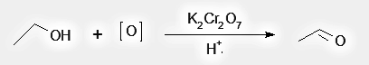
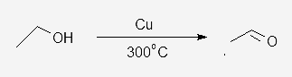
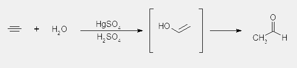
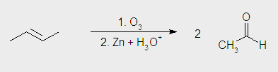
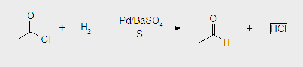
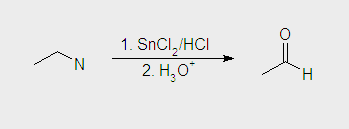

PREPARATION OF ACETALDEHYDE
1. Oxidation of Ethanol
Acetaldehyde are prepared by oxidation of ethanol. Potassium permanganate in basic solution or Potassium dichomate in acidic solution are used as oxidizing agent

2. Catalitic Dehydrogenation of Ethanol
Acetaldehyde can be prepared by passing the vapours of ethanol over a copper catalist at 300°C.

3. Addition of water to Acetylene
Acetylene react with water in teh presence of mercuric sulphate and sulphuric acid to yeild acetaldehyde.

4. Ozonolysis of 2-pentene
2-pentene react with O3 in the presence of Zn and H2O to produce Acetaldehyde

5. By Alkaline Hydrolisis of Gem-dihalides

6. Rosenmund's Reduction
Acid Chloride is hydrogenated over catalyst Pd on BaSO4 and partially poisoned by the addition of sulphur or quinoline to give Acetaldehyde

7. Nitriles reaction
Nitriles are first reduced to corresponding imines with SnCl2 in presence of HCl, which on hydrolisis give corresponding Acetaldehyde. Preparation of Acetaldehyde by this methode is known as Stephen's reduction.
